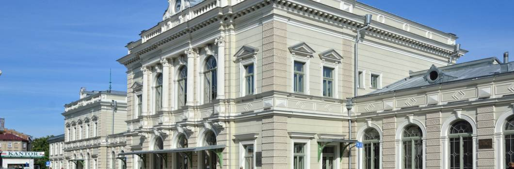

Powrót do strony głównej

Budynek dworca PKP wybudowany w latach 1859-1860 i przebudowany w 1895 roku,
jest jedną z najokazalszych budowli na linii kolejowej łączącej Kraków ze Lwowem.
W 1872 roku Przemyśl zyskał również połączenie kolejowe z Budapesztem.
W latach 2010-2012 dworzec przeszedł gruntowny remont,
a przy nadzorze konserwatorskim przywrócono mu wygląd sprzed ponad 100 lat.
Recenzja miejsca